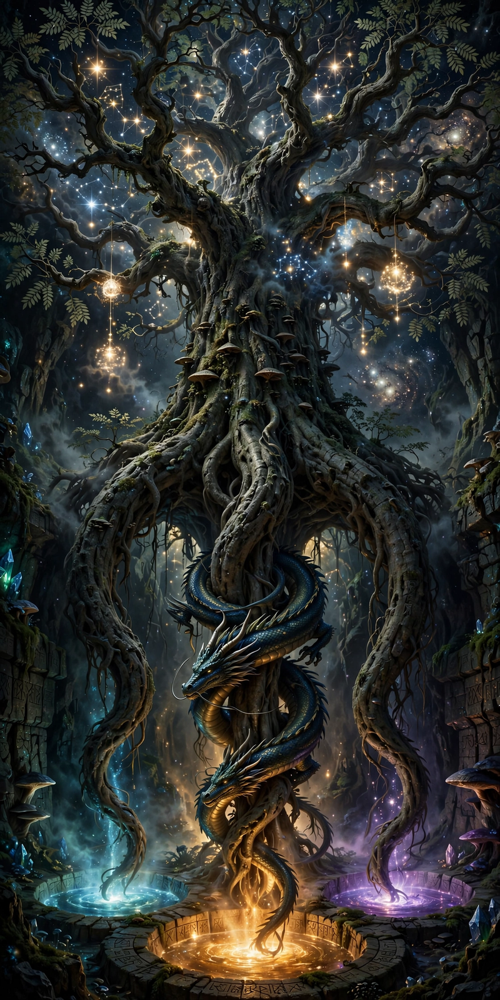

From Wikipedia, the free encyclopedia
| Yggdrasil | |
|---|---|
| Type | World tree of Norse cosmology |
| Species | An ash tree (in the sources) |
| Roots | Three, reaching to the wells of Urd, Mímir, and Hvergelmir |
| Inhabitants | The dragon Níðhöggr, the eagle, the squirrel Ratatoskr, four stags |
| Significance | Connects the nine worlds; the Norns water it at the Well of Urd |

Yggdrasil is the immense ash tree at the centre of the cosmos in Norse mythology, whose branches spread over all the worlds and whose roots reach into the deepest wells of wisdom and fate. Beneath it the gods hold their council, the Norns — the fates Urd, Verdandi and Skuld — tend its trunk, and creatures from the dragon gnawing its roots to the eagle in its crown enact the world's perpetual cycle of decay and renewal. It is the axis of the Norse universe and one of the most famous images in world mythology.
The Prose Edda and Grímnismál give Yggdrasil three roots. One reaches to the Well of Urd in heaven, where the Norns live, who pour water and mud over the roots so the tree does not rot, and where the gods ride daily over Bifröst to judgement. The second reaches to the well of Mímir, source of wisdom, where Odin pledged his eye for a drink. The third reaches to Hvergelmir, the spring of rivers in Niflheim, where the dragon Níðhöggr gnaws the root and the dead dwell. In the branches sit an unnamed eagle and the hawk Vedrfölnir; the squirrel Ratatoskr runs up and down carrying insults between eagle and dragon; four stags browse the foliage, and dew falls from the tree to feed the bees — "honey-dew" — while the tree itself, the poems say, suffers more hardship than men know: it rots, is gnawed, and is browsed, yet stands ever green over Urd's well.
Yggdrasil's name means "Ygg's horse" — Ygg being Odin, and the "horse" the gallows-tree — because Odin, in the Hávamál, hung himself on the tree for nine nights, pierced by a spear, an offering of himself to himself, to seize the wisdom of the runes: the tree as gallows, sacrifice and library at once. At Ragnarök Yggdrasil shakes and groans, yet the tradition implies it endures: from its wood — or its protection — the survivors Líf and Lífþrasir emerge to repeople the new world, having hidden in "Hoddmímir's wood", often identified with the tree itself.
Norse mythology · Odin · Heimdall · Loki · Baldr